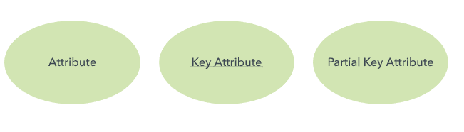
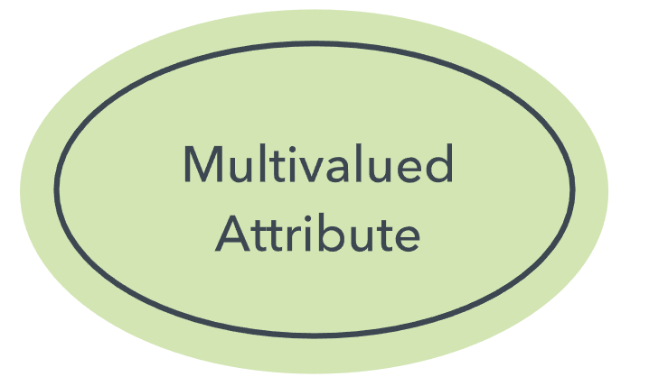

auto, toode. Tavaliselt kujutatakse ristkülikuna.
Entity categories - Üksused jagunevad tugevateks, nõrkadeks ja seostavateks. Tugevat üksust saab määratleda ainult selle omaduste järgi, nõrka mitte.
Seostav üksus ühendab omavahel erinevaid üksuseid või elemente.

Relationship - Suhted näitavad, kuidas üksused üksteisega seotud on või toimivad. Näiteks õpilane registreerub kursusele - see seos ühendab kaks üksust.
Diagrammil kuvatakse suhted tavaliselt teemantide või siltidena.
Attribute - Omadus või tunnus mingi objekti kohta. Sageli kujutatakse ovaali või ringina.

Attribute categories - Atribuudid jagunevad lihtsateks, koostatud ja tuletatud ning ühekordseteks või mitmekordseteks. Lihtne - väärtus on jagamatu,
näiteks telefoninumber. Koostatud - koosneb alamatribuutidest. Tuletatud - arvutatakse või tuletatakse teisest atribuudist, näiteks vanus sünnikuupäeva põhjal.

Multi-value - Märgitakse rohkem kui üks atribuudi väärtus, näiteks inimese mitu telefoninumbrit.

Cardinality - Määrab kahe objekti või objektikogumi vahelised arvulised seosed. Peamised seose tüübid on üks-ühele, üks-mitmele ja mitu-mitmele.
Näide üks-ühele seosest: üks õpilane on seotud ühe postiaadressiga. Näide üks-mitmele seosest: üks õpilane registreerub mitmele kursusele, kuid
iga kursus on seotud ainult ühe õpilasega. Näide mitu-mitmele seosest: õpilased on seotud mitme õppejõuga ja iga õppejõud on seotud mitme õpilasega.